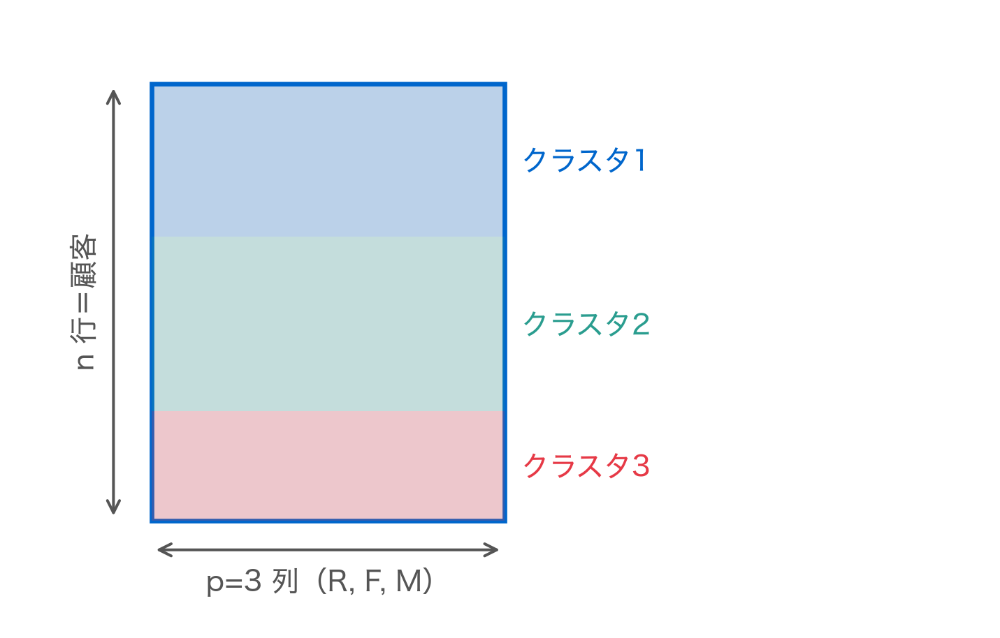
第12回 混合正規分布と EM アルゴリズム
ラベルの見えない LDA を、所属の確率で解く
第I部 理論
前回まで：0か1で分けた
- 第11回のk-means：データ行列 \mathbf X を \mathbf G\mathbf C で近似する最小二乗法
- 所属行列 \mathbf G の成分は0か1。どの行も、1つの群に100%入る
- \mathbf G と代表点の行列 \mathbf C を交互に更新すると、J は毎回下がる
場面①：小麦の粒を3群に
小麦の粒 210 粒の、粒の長さと溝の長さ。第11回のk-means（k=3）で3つの群に分けた。境目は代表点（■）の垂直二等分線。
場面②：境目のそばも100%
丸で囲んだ粒は、境目のすぐそばにある。それでも \mathbf G では1か0で、どれか1つの群に100%入る。

場面②：群の形も見ていない
粒の雲は、左下から右上へ斜めに伸びている（矢印）。垂直二等分線の境目は、この伸び方と関係なく引かれる。

場面③：空いたマス
| 最小二乗法 | 最尤法 | |
|---|---|---|
| y を近似する | 第1回・第5回 | 第6回（LDA・ロジスティック回帰） |
| 行を群に分ける | 第11回（k-means） | ？ |
行を群に分ける問題には、最尤法のマスがまだ無い。
場面③：第6回の道
- 第5回：0/1の y を最小二乗法で近似すると、確率が出なかった
- 第6回：y の出方を確率で仮定して最尤法で解くと、確率が出た
群に分ける問題でも、同じ道をたどれるか。
今回の問い
第11回の最後に残した問い：同じ群を最尤法で推定すると？
今回覚える言葉
- 混合正規分布
- 混合比率
- 責任度
- EMアルゴリズム（Eステップ・Mステップ）
次の問い：行はどう出てくるか
- 第6回のLDAは、y と x の出方を確率で書いた
- 群に分ける問題でも、行の出方を確率で書きたい
- ただし、どの行がどの群かは見えていない
問い：所属が見えないとき、行はどんな確率で出てくるか？
小さな例：卵のかご

M玉120個とL玉60個。パックに入っていれば、どの卵がどちらかが見える。
モデル①：第6回のLDA

\Pr(g_{iq}=1)=\pi_q\qquad(\pi_1+\pi_2=1)
まず群を選ぶ。卵なら、M玉かL玉か。g_{iq} は第11回のメンバーシップ関数。
モデル①：群の中で散らばる
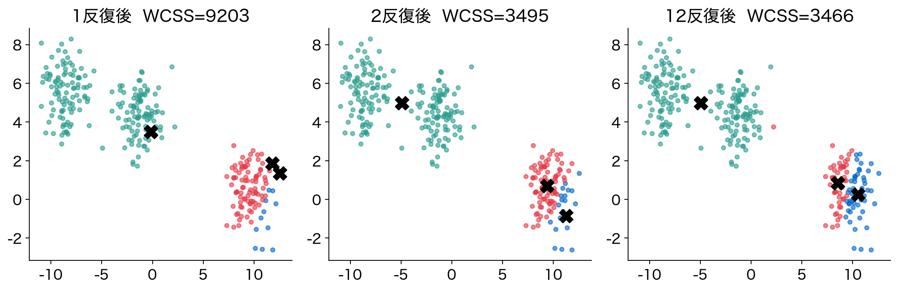
x_i\mid g_{iq}=1\ \sim\ N(\mu_q,\sigma^2)
選んだ群の中で、重さが正規分布に従って散らばる。第6回はこの状態で推定した。
モデル②：所属を隠す

1つのかごに混ざると、見えるのは重さ x だけ。どちらの群から出たかは分からない。
モデル②：2つの道を足す

f(x)=\pi_1f_1(x)+\pi_2f_2(x)
「M玉を選んで出る」と「L玉を選んで出る」の確率の和（黒）。f_q は群 q の正規分布の密度。
定義：混合正規分布

2つの山を割合 \pi_q で重み付けて足した分布を、混合正規分布と呼ぶ。\pi_q を混合比率と呼ぶ。
モデル③：ベクトルで
2変数の例：浜辺で拾った貝殻120個の長さと高さ。行 i はベクトル \tilde{\boldsymbol x}_i（第11回と同じ記号）。

モデル③：群ごとの楕円
群の中の分布を、第6回の多変量正規分布にする。
f(\tilde{\boldsymbol x})=\sum_{q=1}^{k}\pi_qN(\tilde{\boldsymbol x};\boldsymbol\mu_q,\boldsymbol\Sigma_q)
p=1、k=2 なら1変数の式に戻る。
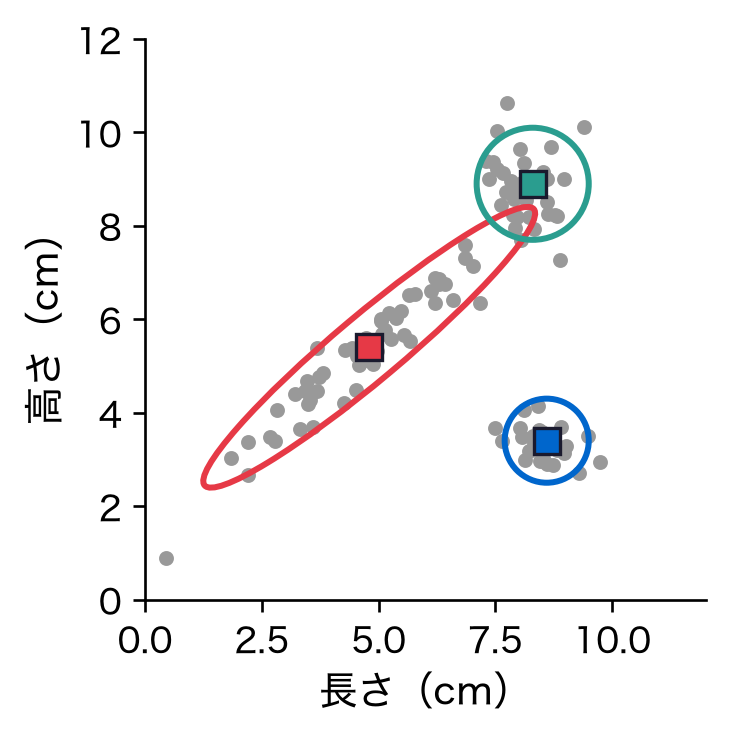
モデル③：Σは群ごとでよい
第6回のLDAは、共分散行列を群で共通にした。ここでは群ごとに \boldsymbol\Sigma_q を持たせてよい。楕円の傾きと大きさが群で変わる。

行列で見る：見えないG
\mathbf G=\begin{bmatrix}?&?&?\\?&?&?\\\vdots&\vdots&\vdots\\?&?&?\end{bmatrix},\qquad \mathbf G\mathbf 1_k=\mathbf 1_n
第11回と同じ形の所属行列。ただし値は観測されない。
行列で見る：推定するもの
- 混合比率 \pi_1,\dots,\pi_k
- 平均を行に並べた \mathbf C=[\boldsymbol\mu_1,\dots,\boldsymbol\mu_k]^\top（k\times p。第11回の代表点の行列と同じ置き方）
- 共分散行列 \boldsymbol\Sigma_1,\dots,\boldsymbol\Sigma_k
次の問い：何を最大にするか
- 行の出方の確率は書けた
- 最尤法では、データ全体の出やすさを最大にする（第6回）
問い：所属が見えないとき、対数尤度はどんな形になるか？
目的関数①：1点の出やすさ
f(x_i)=\pi_1f_1(x_i)+\pi_2f_2(x_i)
卵1個の重さ x_i の出やすさ。どちらの群から出たか分からないので、2つの道の確率を足す。
目的関数②：対数尤度
\ell(\pi_1,\mu_1,\mu_2,\sigma^2)=\sum_{i=1}^{n}\log\Bigl(\pi_1f_1(x_i)+\pi_2f_2(x_i)\Bigr)
行が独立なら、全体の出やすさは積。対数をとると和になる。
目的関数②：logの中に和
\ell=\sum_{i=1}^{n}\log\Bigl(\underbrace{\pi_1f_1(x_i)+\pi_2f_2(x_i)}_{\text{logの中の和}}\Bigr)
ただし、logの中に和が残る。\mu_1 を動かすと、この和全体が変わる。
目的関数③：所属が見えていれば
\ell_{\mathbf G}=\sum_{i=1}^{n}\sum_{q=1}^{2}g_{iq}\Bigl[\log\pi_q+\log f_q(x_i)\Bigr]
第6回の同時の尤度。1が立った群の項だけが残り、和はlogの外に出る。
目的関数③：一度には解けない
| 和の位置 | 解き方 | |
|---|---|---|
| 所属が見えている（第6回） | logの外 | 群ごとに分かれ、数えて解けた |
| 所属が見えない（今回） | logの中 | 分かれない。偏微分して0とおいても閉じた式にならない |
目的関数④：ベクトルで
\ell=\sum_{i=1}^{n}\log\sum_{q=1}^{k}\pi_qN(\tilde{\boldsymbol x}_i;\boldsymbol\mu_q,\boldsymbol\Sigma_q)
p 変数・k 群。p=1、k=2、\boldsymbol\Sigma_q=\sigma^2 なら目的関数②に戻る。
目的関数⑤：行列で
n\times k の行列 \boldsymbol\Phi を置く。
\begin{aligned} \phi_{iq}&=\pi_qN(\tilde{\boldsymbol x}_i;\boldsymbol\mu_q,\boldsymbol\Sigma_q)\\ \ell&=\mathbf 1_n^\top\log\bigl(\boldsymbol\Phi\mathbf 1_k\bigr) \end{aligned}
\boldsymbol\Phi\mathbf 1_k の第 i 成分が、行 i の出やすさ。logは成分ごとにとる。

次の問い：logの中の和をどう扱う
- 対数尤度を最大にするには、偏微分して0とおきたい
- logの中に和があると、偏微分の式に分数が出てくる
- その分数には、意味と名前がある
道具を先にそろえる。
道具①：この卵はどちら？
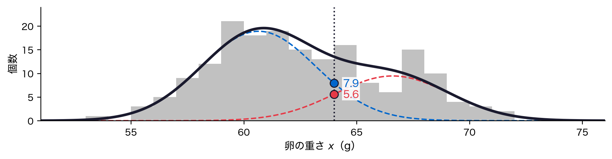
重さ64 gの卵。この重さで、M玉の道の高さは 7.9、L玉の道の高さは 5.6。
道具①：ベイズの定理（第6回）

r_{iq}=\Pr(g_{iq}=1\mid x_i)=\frac{\pi_qf_q(x_i)}{\pi_1f_1(x_i)+\pi_2f_2(x_i)}
64 gの卵がL玉である確率は、高さの比で 0.41。
道具①：責任度
r_{iq}=\Pr(g_{iq}=1\mid\tilde{\boldsymbol x}_i)=\frac{\pi_qf_q(\tilde{\boldsymbol x}_i)}{\sum_{l=1}^{k}\pi_lf_l(\tilde{\boldsymbol x}_i)}
\tilde{\boldsymbol x}_i を見たうえで群 q である確率（事後確率）。群 q が行 i を説明する責任の大きさと見て、責任度と呼ぶ。
道具①：見えないgの期待値
\mathbb E[g_{iq}\mid\tilde{\boldsymbol x}_i]=1\cdot r_{iq}+0\cdot(1-r_{iq})=r_{iq}
g_{iq} は0か1。期待値は1をとる確率に等しい。責任度は、見えない g_{iq} の期待値でもある。
道具②：責任度行列R
\mathbf R=\operatorname{diag}\bigl(\boldsymbol\Phi\mathbf 1_k\bigr)^{-1}\boldsymbol\Phi
責任度を n\times k に並べる。分子は \boldsymbol\Phi の (i,q) 成分、分母はその行の和。\boldsymbol\Phi の各行を行の和で割ればよい。
道具②：Gと同じ制約
| 卵 | 重さ（g） | g_{i1} | g_{i2} | r_{i1} | r_{i2} |
|---|---|---|---|---|---|
| 1 | 58.0 | 1 | 0 | 1.00 | 0.00 |
| 2 | 62.9 | 1 | 0 | 0.79 | 0.21 |
| 3 | 64.5 | 0 | 1 | 0.48 | 0.52 |
| 4 | 69.0 | 0 | 1 | 0.01 | 0.99 |
\mathbf R\mathbf 1_k=\mathbf 1_n\qquad(\mathbf G\mathbf 1_k=\mathbf 1_n\ \text{と同じ形})
どの行も和は1。違いは成分で、\mathbf G は0か1、\mathbf R は0〜1の確率。
道具③：logの微分
\frac{d}{d\theta}\log u(\theta)=\frac{u'(\theta)}{u(\theta)}
合成関数の微分。logの中身の微分を、中身で割る。
道具③：密度をμで偏微分
\begin{aligned} f_q(x)&=\frac{1}{\sqrt{2\pi\sigma^2}}\exp\Bigl(-\frac{(x-\mu_q)^2}{2\sigma^2}\Bigr)\\ \Longrightarrow\quad\frac{\partial f_q(x)}{\partial\mu_q}&=f_q(x)\,\frac{x-\mu_q}{\sigma^2} \end{aligned}
指数の中を \mu_q で偏微分した (x-\mu_q)/\sigma^2 が、前に出る。
道具④：重み付きの人数と和
n_q=\sum_{i=1}^{n}r_{iq},\qquad \begin{bmatrix}n_1\\\vdots\\ n_k\end{bmatrix}=\mathbf R^\top\mathbf 1_n
各行が群 q に属する確率を足したもの。群 q の実質の人数で、\sum_qn_q=n。
道具④：重み付きの和

(\mathbf R^\top\mathbf X)_{qj}=\sum_ir_{iq}x_{ij}。第 q 行は、各行を責任度 r_{iq} で重み付けて足したもの。
道具④：Rが0/1なら
\mathbf R=\mathbf G\quad\Longrightarrow\quad \begin{aligned} &\mathbf R^\top\mathbf 1_n=\text{群の人数}\\ &\mathbf R^\top\mathbf X=\mathbf G^\top\mathbf X=\text{群の和} \end{aligned}
第11回の \mathbf G^\top\mathbf G の対角と \mathbf G^\top\mathbf X に戻る。\mathbf R^\top\mathbf R は対角にならないので、代わりに \operatorname{diag}(\mathbf R^\top\mathbf 1_n) を使う。
道具がそろった
- 責任度 r_{iq} と、それを並べた \mathbf R
- logの微分と、正規分布の密度の偏微分
- 責任度で重み付けた人数 n_q と和 \mathbf R^\top\mathbf X
これで対数尤度を偏微分できる。
導出①：μを微分する
\frac{\partial\ell}{\partial\mu_q} =\sum_{i=1}^{n}\frac{\pi_qf_q(x_i)}{\pi_1f_1(x_i)+\pi_2f_2(x_i)}\cdot\frac{x_i-\mu_q}{\sigma^2}
1変数・2群。logの微分（道具③）で、中身の偏微分を中身で割った。
導出①：分数は責任度
\begin{aligned} \frac{\partial\ell}{\partial\mu_q} &=\sum_{i=1}^{n}\frac{\pi_qf_q(x_i)}{\pi_1f_1(x_i)+\pi_2f_2(x_i)}\cdot\frac{x_i-\mu_q}{\sigma^2}\\ &=\sum_{i=1}^{n}r_{iq}\,\frac{x_i-\mu_q}{\sigma^2} \end{aligned}
分数の部分が、ちょうど責任度（道具①）になる。
導出②：0とおく
\sum_{i=1}^{n}r_{iq}\,(x_i-\mu_q)=0 \quad\Longrightarrow\quad \hat\mu_q=\frac{\sum_ir_{iq}x_i}{\sum_ir_{iq}}
責任度で重み付けた平均。r_{iq} が0か1なら、群の平均（第6回）。
導出②：右辺にもμがある
\hat\mu_q=\frac{\sum_ir_{iq}x_i}{\sum_ir_{iq}},\qquad r_{iq}=\frac{\pi_qf_q(x_i)}{\pi_1f_1(x_i)+\pi_2f_2(x_i)}
右辺の r_{iq} も \mu_1,\mu_2 を含む。両辺に \mu_q があり、閉じた式ではない。
導出③：rを固定して解く

今の値で r_{iq} を計算して固定し、\mu_q を更新する。新しい \mu_q で r_{iq} を計算し直す。第11回の交互と同じ考え方。
導出④：σ²も重み付き
\hat\sigma^2=\frac1n\sum_{i=1}^{n}\sum_{q=1}^{2}r_{iq}\,(x_i-\hat\mu_q)^2
\sigma^2 で偏微分して0とおき、r_{iq} を固定して解く。第6回の群の中の分散 s_{\mathrm W}^2 に重みを付けたもの。
導出⑤：πは数える
\begin{aligned} \frac{\partial\ell}{\partial\pi_1}&=\sum_{i=1}^{n}\frac{f_1(x_i)-f_2(x_i)}{f(x_i)} =\frac{n_1}{\pi_1}-\frac{n_2}{\pi_2}=0\\ \Longrightarrow\quad\hat\pi_1&=\frac{n_1}{n} \end{aligned}
\pi_2=1-\pi_1 を代入した。第6回のコインと同じ。n_q=\sum_ir_{iq} は実質の人数（道具④）。
導出⑥：ベクトルで
\begin{aligned} \hat{\boldsymbol\mu}_q&=\frac1{n_q}\sum_{i}r_{iq}\tilde{\boldsymbol x}_i\\ \hat{\boldsymbol\Sigma}_q&=\frac1{n_q}\sum_{i}r_{iq}(\tilde{\boldsymbol x}_i-\hat{\boldsymbol\mu}_q)(\tilde{\boldsymbol x}_i-\hat{\boldsymbol\mu}_q)^\top \end{aligned}
p 変数。p=1 なら導出②の重み付きの平均に戻る。\boldsymbol\Sigma_q は群ごとの重み付きの共分散。
導出⑦：行列で
\hat{\mathbf C}=\operatorname{diag}(n_1,\dots,n_k)^{-1}\mathbf R^\top\mathbf X
平均を行に並べた \mathbf C を、道具④でまとめて書く。第11回の \hat{\mathbf C}=(\mathbf G^\top\mathbf G)^{-1}\mathbf G^\top\mathbf X の \mathbf G を \mathbf R に替えた形。
導出⑧：第6回と並べる
| 第6回（LDAの最尤推定） | 今回（\mathbf R を固定した最尤推定） | |
|---|---|---|
| 所属 | g_{iq}（0/1、観測） | r_{iq}（確率、計算する） |
| 割合 | \hat\pi_q=n_q/n、n_q=\sum_ig_{iq} | \hat\pi_q=n_q/n、n_q=\sum_ir_{iq} |
| 平均 | \hat{\boldsymbol\mu}_q=\frac1{n_q}\sum_ig_{iq}\tilde{\boldsymbol x}_i | \hat{\boldsymbol\mu}_q=\frac1{n_q}\sum_ir_{iq}\tilde{\boldsymbol x}_i |
| 共通の共分散 | \frac1n\sum_i\sum_qg_{iq}(\tilde{\boldsymbol x}_i-\hat{\boldsymbol\mu}_q)(\cdot)^\top=\mathbf S_{\mathrm W} | \frac1n\sum_i\sum_qr_{iq}(\tilde{\boldsymbol x}_i-\hat{\boldsymbol\mu}_q)(\cdot)^\top |
r_{iq} が0/1なら同じ式。違うのは所属の0/1を責任度に替えたところだけ。
次の問い：どう計算するか
- \mathbf R を固定すれば、\pi_q・\mathbf C・\boldsymbol\Sigma_q は重み付きの式で解ける
- \mathbf R は、今のパラメータからベイズの定理で計算できる
この2つの更新を、行列の計算の手順にまとめる。
Eステップ：Rを計算する
\begin{aligned} &\phi_{iq}=\pi_qN(\tilde{\boldsymbol x}_i;\boldsymbol\mu_q,\boldsymbol\Sigma_q)\quad(\boldsymbol\Phi\ \text{は}\ n\times k)\\ &\mathbf R\leftarrow\operatorname{diag}(\boldsymbol\Phi\mathbf 1_k)^{-1}\boldsymbol\Phi,\qquad \ell=\mathbf 1_n^\top\log(\boldsymbol\Phi\mathbf 1_k) \end{aligned}
見えない g_{iq} を期待値 r_{iq} で置き換える。期待値（expectation）のE。
Mステップ：重み付きで推定
\begin{aligned} &(n_1,\dots,n_k)^\top=\mathbf R^\top\mathbf 1_n,\qquad \pi_q\leftarrow n_q/n\\ &\mathbf C\leftarrow\operatorname{diag}(n_1,\dots,n_k)^{-1}\mathbf R^\top\mathbf X\\ &\boldsymbol\Sigma_q\leftarrow\tfrac1{n_q}(\mathbf X-\mathbf 1_n\boldsymbol\mu_q^\top)^\top\operatorname{diag}(\boldsymbol r_q)(\mathbf X-\mathbf 1_n\boldsymbol\mu_q^\top) \end{aligned}
\boldsymbol r_q は \mathbf R の第 q 列。重み付きの対数尤度を最大にする。最大化（maximization）のM。
アルゴリズム：EM
- 用意する：データ行列 \mathbf X（n\times p）と群の数 k
- 初期値：\mathbf C は \mathbf X の行から k 行を乱数で選ぶ。\boldsymbol\Sigma_q は \mathbf X 全体の共分散行列、\pi_q=1/k
- Eステップ：\phi_{iq}=\pi_qN(\tilde{\boldsymbol x}_i;\boldsymbol\mu_q,\boldsymbol\Sigma_q)、\mathbf R\leftarrow\operatorname{diag}(\boldsymbol\Phi\mathbf 1_k)^{-1}\boldsymbol\Phi、\ell=\mathbf 1_n^\top\log(\boldsymbol\Phi\mathbf 1_k)
- Mステップ：(n_1,\dots,n_k)^\top=\mathbf R^\top\mathbf 1_n、\pi_q\leftarrow n_q/n、\mathbf C\leftarrow\operatorname{diag}(n_1,\dots,n_k)^{-1}\mathbf R^\top\mathbf X、 \boldsymbol\Sigma_q\leftarrow\frac1{n_q}(\mathbf X-\mathbf 1_n\boldsymbol\mu_q^\top)^\top\operatorname{diag}(\boldsymbol r_q)(\mathbf X-\mathbf 1_n\boldsymbol\mu_q^\top)（\boldsymbol r_q は \mathbf R の第 q 列）
- 収束判定：\ell の増え方が十分小さければ止める。そうでなければ3へ
- ランダムスタート：2〜5を何通りかの初期値で行い、\ell が最も大きい答えを採る
卵で回す①：初期値

かごの卵で回す（所属は見ない）。初めは2つの山が近く、幅も広い。
卵で回す②：山が離れる
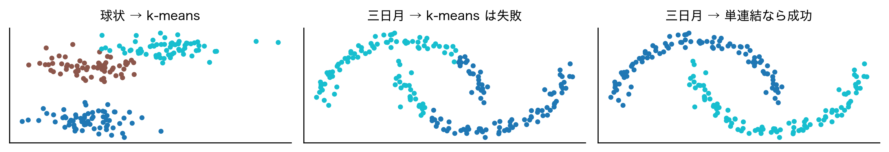
EとMを 28 回繰り返すと、2つの山が左右に離れ、幅が狭まる。
卵で回す③：止まる

73 回で止まった。M玉とL玉の山に近い2つの道が出る。
k-meansの手順と並べる
| k-means（第11回） | EM（今回） | |
|---|---|---|
| 行と群の関係を測る | 距離の行列 \mathbf D | 密度の行列 \boldsymbol\Phi |
| 所属を決める | 各行の最小の列に1を置く（\mathbf G） | 各行を行の和で割る（\mathbf R） |
| 群のパラメータ | (\mathbf G^\top\mathbf G)^{-1}\mathbf G^\top\mathbf X | \operatorname{diag}(\mathbf R^\top\mathbf 1_n)^{-1}\mathbf R^\top\mathbf X と \pi_q・\boldsymbol\Sigma_q |
骨組みは同じ。替わったのは3か所と、足された共分散・混合比率。
次の問い：手順から何が言えるか
- 手順は書けた。卵では止まり、2つの山が出た
- \ell はどう動くのか。所属を見ずに、何が分かるのか
手順の性質を、人工データで1つずつ確かめる。
帰結①：ℓは毎回上がる
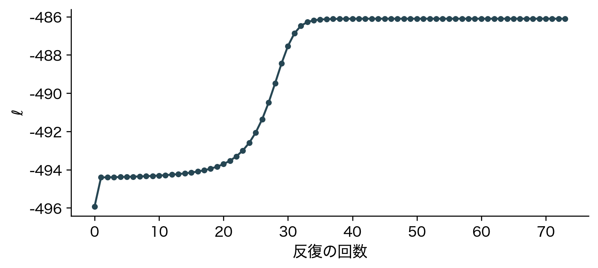
かごの卵で回した \ell。EとMを繰り返すと、\ell は一度も下がらない。
帰結①：平らな所がある
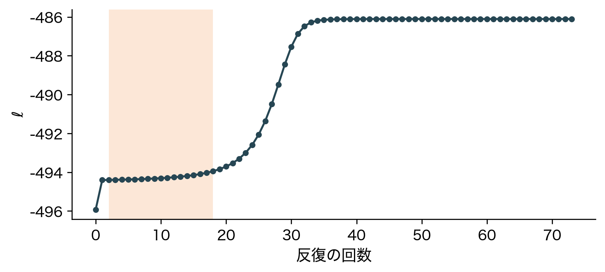
反復 2〜18 回はほとんど動かない（橙）。2つの山がまだ近く、どの卵も責任度が半々に近い。
帰結②：所属を見たS字
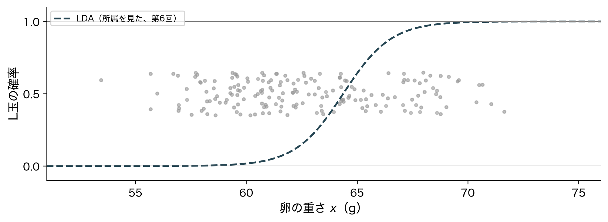
所属を見て第6回の式で推定したLDAの事後確率（破線）。重さが増えると、L玉の確率がS字で上がる。
帰結②：yを見ずに確率が出る
EMの責任度（緑）は所属を使っていない。それでも、所属を見たLDAに近いS字が出る。
帰結②：k-meansなら階段
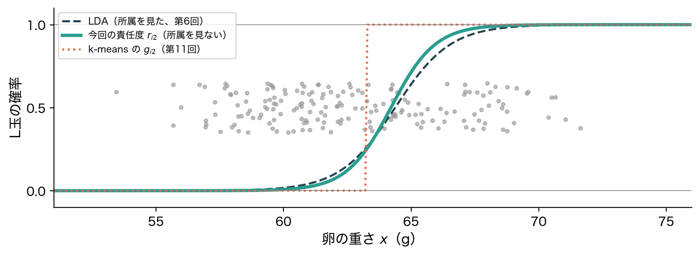
同じ卵をk-meansで分けると、所属は 63.2 gで0から1へ跳ぶ階段（点線）。
帰結③：k-meansの境目
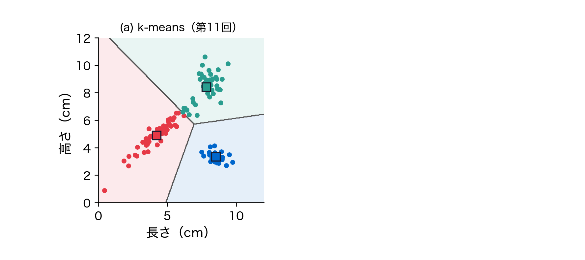
貝殻をk-meansで分ける。境目は垂直二等分線なので、ハマグリの帯の右上の端がホタテの群に入る。
帰結③：群ごとの楕円
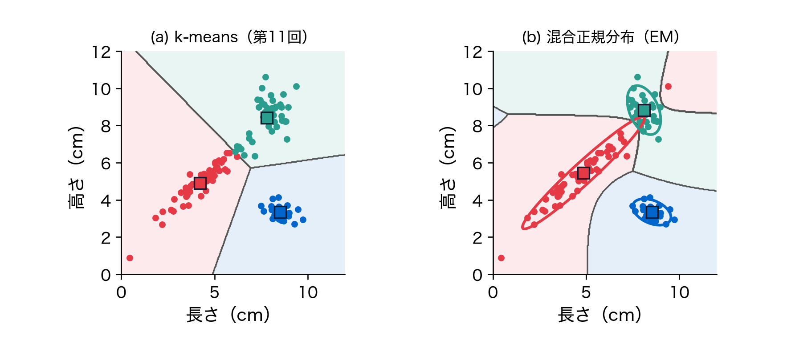
EMは群ごとの楕円を推定する。ハマグリの帯に沿った細長い楕円になり、境目が曲がる。
帰結④：境目のそばは半々
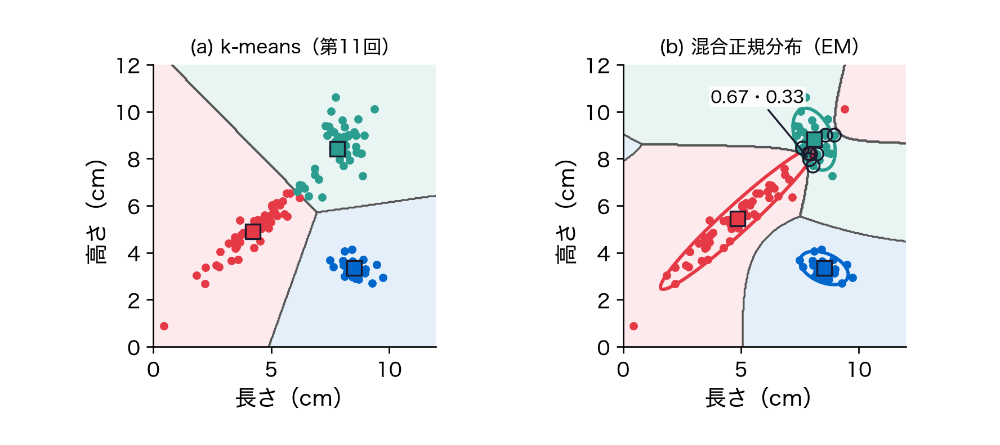
丸は最大の責任度が0.9未満の 8 点。どちらとも言えないことを、確率で言える。
次の問い：k-meansとどうつながる
- どちらも、所属と群のパラメータを交互に更新する
- 違いは、所属を0/1で持つか、確率で持つか
問い：EMのどこを変えると、k-meansになるか？
帰結⑤：σ²を小さくすると
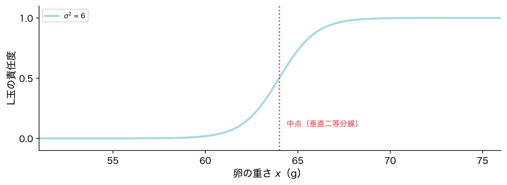
\boldsymbol\Sigma_q=\sigma^2\mathbf I（共通の球）、\pi_q も等しく固定する。\sigma^2 が大きいと、責任度はなだらかなS字。
帰結⑤：S字が階段になる
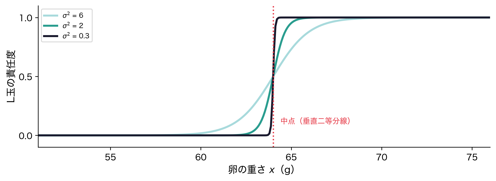
\sigma^2 を小さくすると、S字が急になる。\sigma^2\to0 で、中点での階段になる。
帰結⑥：Eは最も近い代表点
r_{iq}=\frac{\exp\bigl(-\lVert\tilde{\boldsymbol x}_i-\boldsymbol\mu_q\rVert_2^2/2\sigma^2\bigr)}{\sum_l\exp\bigl(-\lVert\tilde{\boldsymbol x}_i-\boldsymbol\mu_l\rVert_2^2/2\sigma^2\bigr)} \ \xrightarrow{\ \sigma^2\to0\ }\ \hat g_{iq}
\pi_q と密度の前の係数は打ち消し合う。分母では距離の二乗が最も小さい項が残り、最も近い代表点で1になる。
帰結⑥：k-meansは極限
\hat{\mathbf C}=\operatorname{diag}(\mathbf R^\top\mathbf 1_n)^{-1}\mathbf R^\top\mathbf X\ \xrightarrow{\ \mathbf R\to\mathbf G\ }\ (\mathbf G^\top\mathbf G)^{-1}\mathbf G^\top\mathbf X
Mステップは群の平均になる（第11回）。Eが最も近い代表点、Mが群の平均で、k-meansそのもの。
帰結⑥：ℓの最大はJの最小
\ell\approx\text{定数}-\frac{J}{2\sigma^2},\qquad J=\lVert\mathbf X-\mathbf G\mathbf C\rVert_F^2
1つの群の項だけが残る。\ell の最大化は J の最小化に一致する。誤差が正規分布なら最尤法が最小二乗法に一致した（第6回）のと同じ関係。
最後の問い：止まった所は最大か
- \ell は毎回上がり、どこかで止まる
- k-meansでは、止まる先が初期値しだいだった（第11回）
問い：EMが止まった所は、\ell の最大か？
帰結⑦：初期値しだい
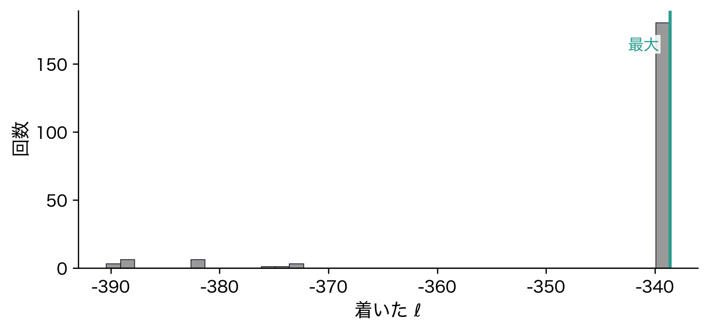
貝殻で初期値を 200 通り試し、最大の \ell に着いたのは 180 回。局所解があるので、やり直して最大を採る。
帰結⑧：1点に縮むと
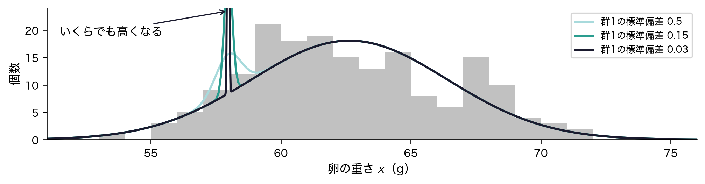
群1の平均を1個の卵の重さに置き、その分散を小さくする。山はその1点で、いくらでも高くなる。
帰結⑧：ℓはいくらでも大きい
\begin{aligned} &\mu_1=x_1,\ \ \sigma_1^2\to0\\ \Longrightarrow\quad&\log f_1(x_1)=-\tfrac12\log(2\pi\sigma_1^2)\ \to\ \infty \end{aligned}
ほかの行は群2が受け持てば有限。群ごとに分散を持たせると、\ell の最大が無い。
帰結⑧：対角に小さな数を足す
- 多変量では、群が数点や薄い板に潰れて \boldsymbol\Sigma_q が逆行列を持たなくなると、同じことが起きる
- \boldsymbol\Sigma_q は1つの群で p(p+1)/2 個の値を持つ。p が大きいと、行の数に比べて多くなりやすい
- 防ぎ方：\boldsymbol\Sigma_q の対角に小さな数を足す（第4回の罰と同じ発想）
帰結⑨：k-meansと並べる
| k-means（第11回） | 混合正規分布（今回） | |
|---|---|---|
| 推定法 | 最小二乗法：\lVert\mathbf X-\mathbf G\mathbf C\rVert_F^2 を最小 | 最尤法：\ell=\mathbf 1_n^\top\log(\boldsymbol\Phi\mathbf 1_k) を最大 |
| 所属 | \mathbf G（0/1） | \mathbf R（確率） |
| 片方を固定した更新 | 最も近い代表点、(\mathbf G^\top\mathbf G)^{-1}\mathbf G^\top\mathbf X | E：ベイズの定理、M：\operatorname{diag}(\mathbf R^\top\mathbf 1_n)^{-1}\mathbf R^\top\mathbf X と \boldsymbol\Sigma_q |
| 群の形 | 等しい球（境目は垂直二等分線） | 群ごとの楕円（境目は曲がる） |
| 目的関数 | 毎回下がる、局所解 | 毎回上がる、局所解、1点に縮むと \infty |
位置づけ：空いたマスを埋める
| 最小二乗法 | 最尤法 | |
|---|---|---|
| y を近似する | 第1回・第5回 | 第6回（LDA・ロジスティック回帰） |
| 行を群に分ける | 第11回（k-means） | 第12回（混合正規分布） |
縦に見れば第11回の推定法を替えたもの、横に見れば第6回のラベルを隠したもの。
第II部 実データ解析
第II部でやること
- 第I部のEMを自分で書き、小麦の粒で回す
- k-meansの答えと並べ、楕円と所属の確率を読む
- 推定に使わなかった品種と照らす
データ：小麦の粒
| 行 | 小麦の粒 210 粒（3品種 カマ・ロサ・カナディアン、70粒ずつ） |
| 列 | 軟X線の画像から測った7列（面積・周長・緊密度・粒の長さ・粒の幅・非対称度・溝の長さ） |
| 品種 | 推定には使わない。答え合わせと色塗りだけ |
出典：UCI Machine Learning Repository「seeds」（Charytanowiczほか, 2010。CC BY 4.0）。
データ：2列を選ぶ
- 面積・周長・粒の長さ・粒の幅は、互いの相関が 0.86〜0.99。どれも粒の大きさの言い換え
- 大きさの代表に粒の長さ、同じmmの長さの溝の長さを組む
- \mathbf X は2列を標準化した 210×2。2列なら楕円が目で見える
前回までの数字：k-means
場面①の答え。第11回のk-means（k=3、初期値20通りの最良）で、群は 88・56・66 粒、J = 60.15。
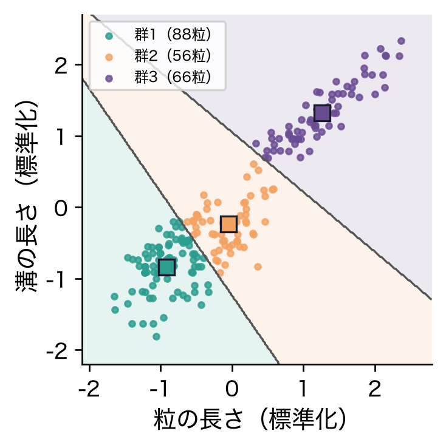
手続き：何をどう計算したか
- 用意する：2列の \mathbf X（210×2）。群の数は k=3、群ごとの \boldsymbol\Sigma_q
- 手順を自分で回す：I-6のEMをNumPyの行列計算で書き、初期値3通り（\mathbf X の行から3行）。100通りでも着く先を数える
- ライブラリと比べる：scikit-learnのGaussianMixture（初期値10通り。共分散の対角に 10^{-6} を足す。自分の手順も同じ）
- 極限を確かめる：\boldsymbol\Sigma_q=\sigma^2\mathbf I、\pi_q=1/3 に固定して \sigma^2 を小さくし、自分で書いたk-meansと比べる
- 照らす：責任度を品種と比べる
- 7列のままでも同じ手順を回す
検証①：まず1通り
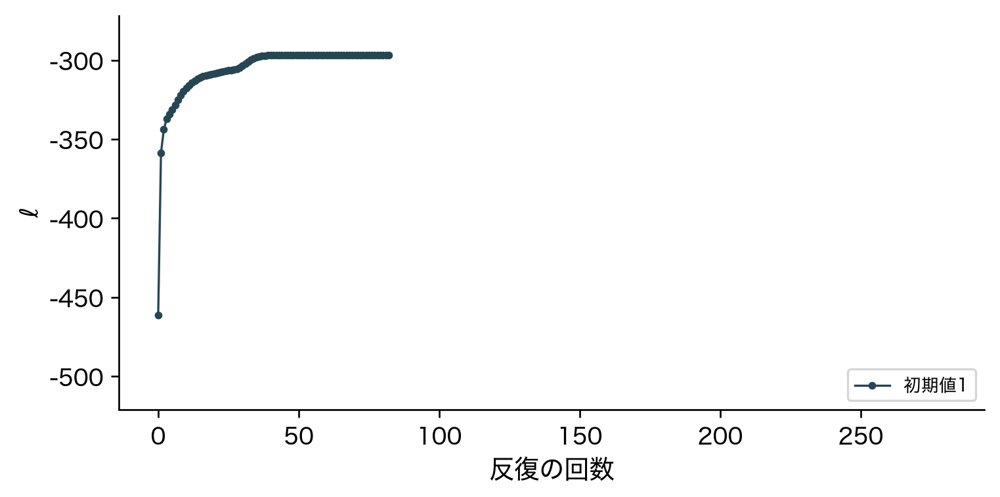
初期値1から回した \ell。一度も下がらずに止まる。
検証①：3通りとライブラリ
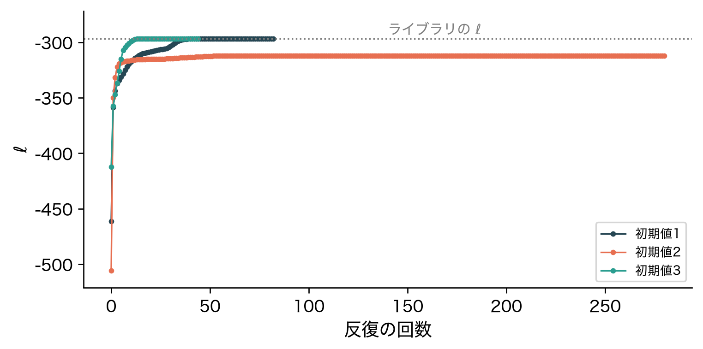
3通りとも一度も下がらない。2 通りは \ell = -296.84（ライブラリと同じ）、残りは -312.27 で止まる（局所解）。
検証②：Mは重み付きの平均
| 確かめたこと | 値 |
|---|---|
| \ell が一度も下がらなかったか（3通り） | はい |
| 初期値100通りで最大の \ell に着いた回数 | 89 |
| 自分の手順とライブラリの \ell | -296.844、-296.844 |
| ライブラリとの差（最大）：\pi_q・\mathbf C・\boldsymbol\Sigma_q | 5.3e-06・1.1e-05・4.9e-06 |
| \operatorname{diag}(\mathbf R^\top\mathbf 1_n)^{-1}\mathbf R^\top\mathbf X と \mathbf C の差（最大） | 6.4e-07 |
| \mathbf R\mathbf 1_k と \mathbf 1_n の差（最大） | 4.4e-16 |
| 実質の粒数 n_1・n_2・n_3 | 79.0・62.0・69.0 |
止まった答えは、EとMの式を両方とも満たしている。
検証③：σ²を小さくすると
| \sigma^2 | 1 | 0.5 | 0.2 | 0.1 | 0.05 | 0.01 |
|---|---|---|---|---|---|---|
| J（責任度の最大の群で数えた） | 63.95 | 63.61 | 60.61 | 60.28 | 60.20 | 60.15 |
| k-means と所属が違う粒 | 9 | 21 | 10 | 4 | 2 | 0 |
| 最大の責任度が 0.99 未満の粒 | 199 | 168 | 146 | 79 | 39 | 4 |
同じ初期値から回した自分のk-means（J = 60.15）に、\sigma^2\to0 で一致。I-7の極限が、実データでも成り立つ。
デモ①：k-meansの境目
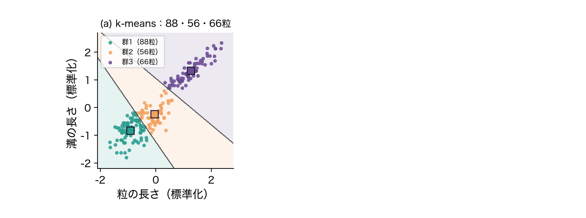
まず前回までの答え。k-meansの境目は垂直二等分線で、斜めに伸びた粒の雲を横切る。
デモ①：楕円で分ける
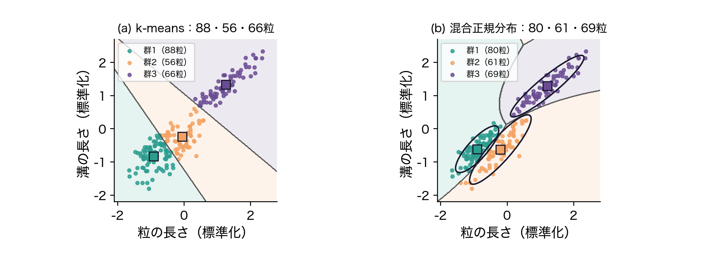
EMは粒の雲に沿った斜めの楕円を推定し、境目も斜めになる。k-meansと所属が違う粒は 41 粒。
デモ②：境目の粒
丸は最大の責任度が0.9未満の 16 粒。k-meansでは、どれも100%どれかの群に入っていた。
解釈①：品種で塗ると
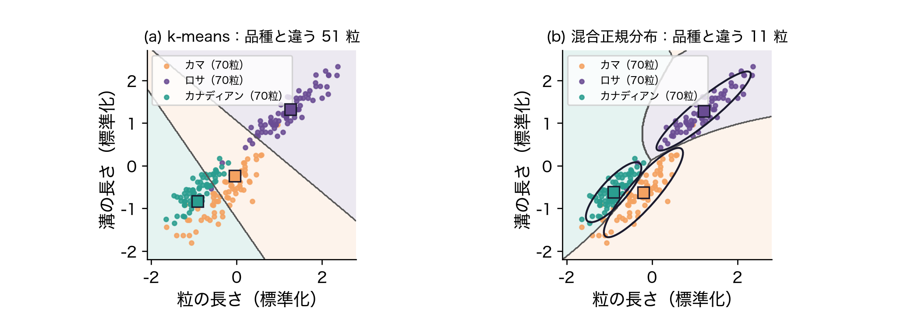
品種は推定に使っていない。それでも楕円の群は品種によく重なる（違うのは 11 粒、k-meansは 51 粒）。
解釈②：確率を品種と照らす
| 最大の責任度 | 粒数 | 品種とずれた割合 |
|---|---|---|
| 0.9 以上 | 194 | 3.6% |
| 0.9 未満 | 16 | 25.0% |
あいまいな粒ほど、品種とずれやすい。確かめ直すなら、責任度の低い粒から。
落とし穴①：7列のまま
- 7列すべてを標準化して \mathbf X（210×7）にする
- 群ごとの \boldsymbol\Sigma_q を持たせ、k=3 で初期値100通りから回す
- パラメータは 107 個（2列では 17 個）。粒は 210 粒
落とし穴①：着く先がばらばら
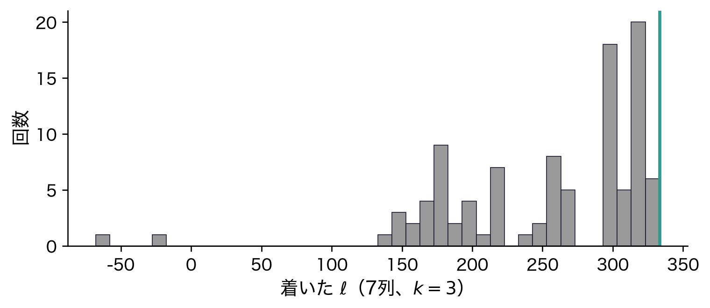
着いた \ell は 50 通り。最大（緑）に着いたのは 2 回だけ（2列では100通り中 89 通り）。
落とし穴①：品種から離れる

最大の \ell の答えは、品種と 37 粒違う。2列のEMは 11 粒、同じ7列のk-meansは 17 粒。
落とし穴②：計算で作った列
\text{緊密度}=\frac{4\pi\times\text{面積}}{\text{周長}^2}
緊密度は、面積と周長から計算した列（書かれた値との差は最大 0.0010）。品種の中の点は、1つの向きにほとんど厚みを持たない。
落とし穴②：潰れてℓが上がる
| 対角に足す数 | 10^{-2} | 10^{-3} | 10^{-4} | 10^{-6} |
|---|---|---|---|---|
| 最大の \ell（初期値100通り） | -281.7 | 28.1 | 214.2 | 333.2 |
| \boldsymbol\Sigma_q の最も細い向きの分散 | 1.0e-02 | 1.0e-03 | 1.1e-04 | 7.5e-06 |
| 品種と違う粒 | 14 | 13 | 14 | 37 |
足す数を小さくするほど \ell は上がる。上がった分は、薄い向きをどれだけ薄く見積もるかで決まる（I-7の「薄い板に潰れる」）。
締め
まとめ①：ラベルを隠したLDA
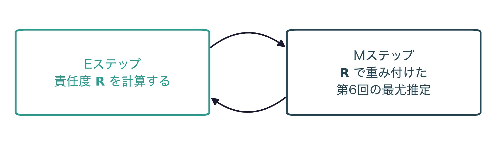
混合正規分布は、第6回のLDAから所属を隠したもの。\ell=\sum_i\log\sum_q\pi_qN(\tilde{\boldsymbol x}_i;\boldsymbol\mu_q,\boldsymbol\Sigma_q) を最尤法で最大にする。
まとめ②：EMで交互に解く

\ell は毎回上がるが、止まる先は初期値しだい。やり直して \ell 最大を採る。
まとめ③：k-meansはその極限
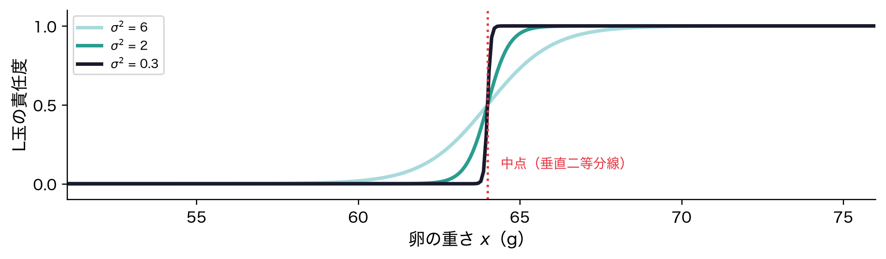
\boldsymbol\Sigma_q=\sigma^2\mathbf I、\sigma^2\to0 で、責任度のS字が \mathbf G の階段になる。
演習では①：境目にいる国
- 演習13（142か国）：K-meansで3つのグループに分け、国ごとのシルエット係数を出す
- いちばん低いのはイラク（−0.07）。自分のグループより、隣のグループのほうが近い
- 演習では、境目の国にグループの方針をそのまま当てはめず、個別に確かめる
演習では②：今日の言葉では
- 境目の国は、最大の責任度が低い行にあたる
- k-meansの \mathbf G は、それでも100%どちらかに入れる
- 混合正規分布なら、所属のあいまいさが確率として出る
次回予告①：ℓはKで上がる
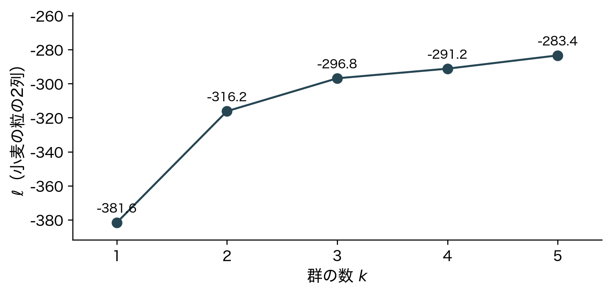
群を増やせば \ell は上がり続ける。第8回の「J は k とともに下がる」と同じ。
次回予告②：推定法では選べない
- \ell の最大化そのものでは、k は選べない
- 共分散を群ごとにするか共通にするかも、パラメータの数を変える同じ問題
問い：k をどう選ぶ？